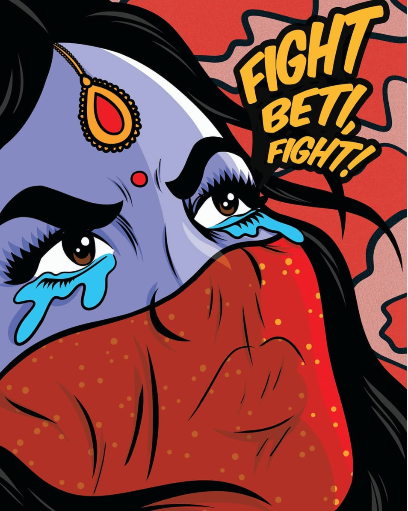
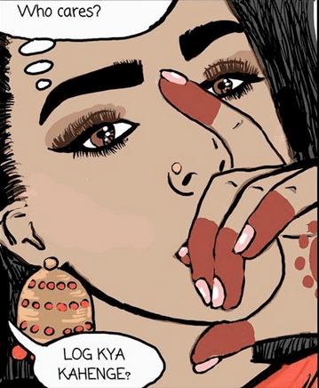

I talked to a friend the other day and he mentioned that he thought women shouldn’t wear short clothes at night,
something that I thought was sexist. Instead of letting it go, I called him out on it. He didn’t take it too well.
Worried about losing him, I went to my mom.
“I think I made him upset...” I told her.
“Okay.” She said. “Do you care?”
Her question stayed with me.
Instead of saying: “What did you do to upset him?” or “Why did you make him upset?”
She asked, “Do you care?”

Image courtsey of @hatecopy.
It’s so underestimated how the small actions we take shape the society around us. By saying “Do you care?”, my mom made me consider my own autonomy.
She allowed me the control to decide how I feel about my actions and how I choose to value my relationships. Instead of putting me automatically at
fault by saying “What did you do to upset him?” or “Why did you upset him?”, she reminded me of the power to decide the consequences of my actions.
Young girls, particularly young South Asian girls, are taught to obsessively care about what other people think of them. “Log Kya Kahenge?”1
becomes a part of our every mental process and erodes away our conscience. We’re taught to be obedient, constantly analyzing every move we take,
every word we speak to please everyone but ourselves. People’s perceptions become our chains and the chatter of others silences us.
I know I do not speak alone when I discuss the all too familiar experience of hearing an older community member saying something racist, sexist,
xenophobic, or otherwise close-minded, knowing what they said is horrifically detrimental to society, and still staying silent because
“Log Kya Kahenge?”
However, I know I speak for legions of brown women when I talk about the experience of hearing the young people in our community use racial slurs,
express sexist opinions, and promote colonialism by prizing fair skin. Even though we are among our peers in these situations (as I was in my
conversation with my friend), it is still insurmountably difficult to express our opinions in part because we are afraid of what our peer circles
will think of us.
Some people will say “It’s not that deep. It’s three words”, since small interactions don’t necessarily evoke the stereotypes of radical change
and social justice such as protests or riots, but it’s the small actions we take that set our definition of “normal”, which is critical in
instilling change.

Image courtesy of @thepakistanimarthastewart.
When my mom said “Do you care?” I replied “No..I don’t. I don’t care.” And a sense of freedom washed over me.
But in saying “Do you care,” what she really said was “I trust you and your judgement.”
Instead of “Log Kya Kahenge?” my mom asked me “Aap kya kahenge?”2, and that support, especially
from a mother or any strong female role model, is priceless. That support empowers revolutions.
And for my mother—an immigrant woman from a rural village—making this normal, I am grateful, and I hope the
South Asian community as a whole can come together to provide trust and freedom to our daughters.
1What will people say? in Hindi.
2What will you say? in Hindi.